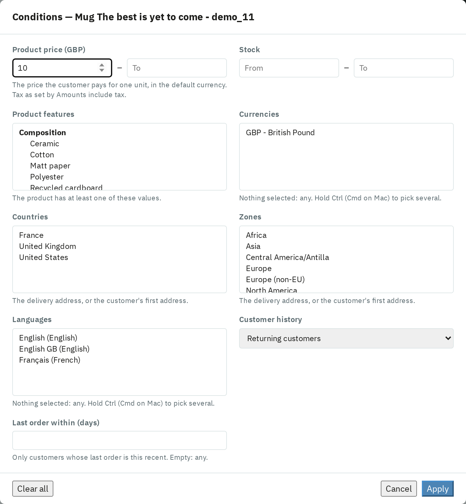

Click Conditions on a row to apply the rule only when the cart meets every condition you set. When the conditions are not met, the rule is skipped and the next rule in line applies, on the product page as well as in the cart.

| Condition | The rule applies when… |
|---|---|
| Product price | the price of one unit is within the range, in the default currency, with or without tax as set by Amounts include tax. |
| Stock | the product's (or combination's) stock is within the range. |
| Product features | the product has at least one of the selected feature values. |
| Currencies / Languages | the shopper uses one of the selected currencies / languages. |
| Countries / Zones | the delivery address (or else the customer's first address) is in one of the selected countries / zones. |
| Customer history | the customer is new (no order yet) or returning. |
| Last order within (days) | the customer's last order is at most this many days old. |
Leave a list empty to accept any value. Hold Ctrl (Cmd on Mac) to pick several entries.